승강기산업기사 (2002-05-26 기출문제)
1과목: 승강기개론
1. 1:1로핑에서 2:1로핑 방법으로 전환하려고 한다. 2:1로핑의 도르래 속도는 1:1로핑의 도르래 속도의 몇 배로 해야 카의 속도가 같아지는가?
- 1/2
- 1/4
- 2
- 4
(정답률: 73%)

2. 엘리베이터의 베이스먼트 방식을 옳게 설명한 것은?
- 기계실이 승강로 상부의 위치에 있는 것이다.
- 기계실이 승강로 피트에 있는 것이다.
- 기계실이 승강로 하부 측면에 있는 것이다.
- 기계실이 승강로 상부 측면에 있는 것이다.
(정답률: 77%)
3. 승강기 기계실의 실내온도는 최대 몇 ℃ 이하로 유지 되어야 하는가?
- 25
- 30
- 35
- 40
(정답률: 84%)
4. 기계실의 구조에 대한 설명으로 적합하지 않은 것은?
- 기계실의 면적은 승강로 수평투영면적의 2배이상으로 하여야 한다.
- 기계실의 위치는 항상 승강로의 최상부쪽에 설치되어야만 한다.
- 기계실의 기둥, 벽 및 천장은 기기의 보수 및 수리를 위해 기기와 일정 간격 이상을 확보하여야 한다.
- 기계실의 출입문은 건축물의 타부분으로부터 격리되어야 한다.
(정답률: 71%)
5. 유희시설 중 회전운동을 하는 유희시설이 아닌 것은?
- 바이킹
- 비행탑
- 관람차
- 모노레일
(정답률: 80%)
6. 유도전동기의 속도제어방식이 아닌 것은?
- 전압제어방식
- 전압 및 주파수 제어방식
- 극수변환방식
- 정지 레오나드방식
(정답률: 54%)
7. 도어 잠김장치에 관한 설명 중 틀린 것은?
- 카 도어시스템의 안전장치이다.
- 승장 도어의 안전장치로 중요한 기능을 갖는다.
- 외부에서 잠김을 풀 경우 특수한 전용 키를 사용하여 야 한다.
- 문이 닫혀 있지 않으면 엘리베이터 운전이 불가능 하도록 구성되어 있다.
(정답률: 82%)
8. 엘리베이터의 정격적재하중 1000kg, 정격속도 120m/min, 오버밸런스율 50%, 총효율 80%인 경우 전동기의 용량은 몇 kW 가 필요한가?
- 9.3
- 10.3
- 11.3
- 12.3
(정답률: 71%)
9. 카가 정지상태에 있을 때 도어를 여는데 필요한 힘은 최소 몇 kgf 정도가 필요한가?
- 1
- 2
- 3
- 5
(정답률: 80%)
10. 수평보행기에 관한 내용이다. 기준에 맞는 것은?
- 경사도가 9도인 것의 정격속도를 50m로 했다.
- 경사도가 6도인 것의 정격속도를 60m로 했다.
- 스탭면이 미끄러지지 않도록 한 경우의 경사도는 15도까지이다.
- 스탭면의 미끄러짐이 있을 수 있는 경우의 경사도는 10도까지이다.
(정답률: 78%)
11. 스프링완충기의 적용 범위는?
- 정격속도 45m/min이하
- 정격속도 60m/min이하
- 정격속도 60∼90m/min이하
- 정격속도 90∼1⑤m/min이하
(정답률: 64%)
12. 권상기 및 권상기 부품의 자중이 900kg이고 로프 중량이 80kg, 로프에 걸리는 카 중량이 3020kg 일 때 기계대에 걸리는 하중은 몇 kgf 인가?
- 3920
- 4000
- 6940
- 7100
(정답률: 42%)
13. 로프의 꼬임형태 중 일반적으로 아파트 등에 많이 사용 하는 것은?(오류 신고가 접수된 문제입니다. 반드시 정답과 해설을 확인하시기 바랍니다.)
- 보통 Z 꼬임
- 보통 S 꼬임
- 랭그 Z 꼬임
- 랭그 S 꼬임
(정답률: 41%)
14. 엘리베이터의 안전기능에 대한 설명 중 옳지 않은 것은?
- 엘리베이터는 안전기능이 작동되면 즉시 정지하게 된다.
- 조속기는 엘리베이터 카의 실제 속도를 항상 측정하여 과속도가 발생하면 동작하여 엘리베이터를 멈추게 한다.
- 엘리베이터가 원하는 반대방향으로 전동기가 회전하면 역방향주행검출기능이 동작하여 엘리베이터를 멈춘다.
- 엘리베이터가 최하층 또는 최상층에 도달하면 종단층 강제감속장치에 의하여 감속하고 정지하게 된다.
(정답률: 55%)
15. 카에는 2개의 출입구를 설치할 수 있는데 그 가능한 경우에 대한 설명으로 가장 타당한 것은?
- 2개의 문이 동시에 열려 통로로 사용되는 구조가 아닐 때
- 2개의 문이 동시에 열려 통로로 사용되는 구조일 때
- 환자용으로서 침대를 옮길 수 있는 넓이일 때
- 화물용으로서 자동차의 운반이 가능한 넓이일 때
(정답률: 77%)
16. 유압식 엘리베이터의 바닥맞춤 보정장치는 착상면을 기준으로 하여 몇 mm 이내의 위치에서 보정할 수 있어야 하는가?
- 30
- 45
- 50
- 75
(정답률: 43%)
17. 기계실에서 하는 검사가 아닌 것은?
- 도어장치의 작동상태
- 조속기의 작동상태
- 전동기 운전시 진동 유무
- 제어회로의 절연저항 측정
(정답률: 79%)
18. 간접식 유압승강기에만 필요한 장치는?
- 전동기 공회전 방지 타이머 장치
- 플런저 이탈 방지장치
- 오일의 온도를 섭씨 5도에서 60도이하로 유지시키는 장치
- 주로프가 늘어짐에 따른 플런저 과전진 방지장치
(정답률: 53%)
19. 그림과 같은 속도제어회로도에서 ①, ②, ③에 해당되는 것은?
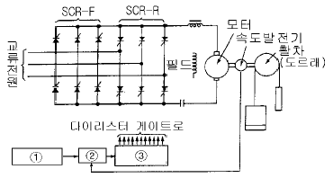
- ① 속도지령장치, ② 제어회로, ③ 점호각 제어장치
- ① 기준전압, ② 비교기, ③ 제어회로
- ① 속도지령장치, ② 비교기, ③ 점호각 제어장치
- ① 기준전압, ② 점호각 제어장치, ③ 비교기
(정답률: 49%)
20. 비상용 엘리베이터의 정격속도는 몇 m/min 이상인가?
- 30
- 45
- 60
- 90
(정답률: 87%)
2과목: 승강기설계
21. 권상기 기계대의 설계에 관한 사항 중 옳은 것은?
- 강재 기계대의 굽힘강도의 안전률은 6 이상으로 하여야 한다.
- 로프중량 및 로프에 걸리는 하중은 2배가 작용하는 것으로 계산한다.
- 권상기 및 권상기 부속품의 자중은 동하중이 작용 하는 것으로 계산한다.
- 균형추 자중은 정하중이 작용하는 것으로 한다.
(정답률: 61%)
22. P15-C060 사양의 VVVF 제어방식 승강기에 적용된 전동기가 4극이고 속도가 1496rpm, 슬립이 3%이다. 이 때, 인버터에서 전동기에 인가하는 주파수는 약 몇 Hz 인가?
- 49.4
- 51.4
- 53.4
- 55.4
(정답률: 52%)
23. 카 자중 1200kg, 정격하중 1000kg인 엘리베이터의 오버밸런스율을 40%로 취하면 균형추의 중량은 몇 kg 인가?
- 1480
- 1600
- 1720
- 1800
(정답률: 77%)
24. 공동주택용 엘리베이터의 경우 카가 주행 중에 정전으로 인하여 정지하였을 때 손으로 도어를 억지로 여는데 필요한 힘은 얼마로 설계해야 하는가?
- 5㎏이상 15㎏이하
- 10㎏이상 20㎏이하
- 20㎏이상 30㎏이하
- 5㎏이상 30㎏이하
(정답률: 71%)
25. 고속을 얻기에 적당한 로핑방법은?
- 1:1로핑
- 2:1로핑
- 3:1로핑
- 4:1로핑
(정답률: 66%)
26. 엘리베이터의 방범설비가 아닌 것은?
- 방범창
- 연락장치
- 경보장치
- 비상정지장치
(정답률: 77%)
27. 지진을 대비한 것이 아닌 것은?
- 도르래의 로프 가이드
- 각 층 강제정지장치
- 권상기의 스톱퍼
- 제어반의 스테이
(정답률: 63%)
28. 백화점에 스컬레이터를 배열할 때 복열승계형 배열방식의 장점이 아닌 것은?
- 에스컬레이터의 위치가 잘 보인다.
- 상행 및 하행방향 모두가 바닥에서 바닥으로 연속적으로 운반한다.
- 전 매장이 잘 보인다.
- 설치면적이 적다.
(정답률: 72%)
29. 정격속도 90m/min인 유입완충기의 필요 최소행정은 몇 mm인가?
- 138
- 152
- 186
- 197
(정답률: 54%)
30. 로프식 엘리베이터의 주행여유에 대한 설명으로 옳지 않은 것은?
- 카가 최상층에 정지했을 때 균형추와 완충기사이의 거리를 말한다.
- 카가 최하층에 정지했을 때 카와 완충기사이의 주행 여유를 말한다.
- 정격속도가 30m/min인 스프링 완충기를 설치하는 로프식 엘리베이터의 균형추측 주행여유는 600mm 이하로 한다.
- 유입식 완충기를 설치하는 로프식 엘리베이터의 최소 주행여유는 제한하지 않는다.
(정답률: 33%)
31. 승강기 설치에 대한 설계를 하고자 할 때 교통량의 계산에 고려할 사항이 아닌 것은?
- 건물의 구조
- 층별 용도
- 빌딩의 용도와 성질
- 층별 인구
(정답률: 78%)
32. 보기와 같은 전동기의 절연등급 중 가장 높은 온도까지 견딜 수 있는 것은?
- A종
- E종
- H종
- F종
(정답률: 74%)
33. 카의 정격속도라 함은 설계도면에 기재된 속도로서 어떤 때의 매분당 최고속도를 말하는가?
- 적재하중이 0%인 카를 하강시킬 때
- 적재하중의 100%의 하중을 실어서 상승할 때
- 적재하중의 밸런스율의 하중을 실어서 상승할 때
- 적재하중의 100%의 하중을 실어서 하강할 때
(정답률: 62%)
34. 엘리베이터용 리미트스위치와 파이날리미트스위치를 다음과 같이 설치하였다. 잘못 설치한 것은?
- 리미트스위치는 광학적 조작식을, 파이날리미트스위치는 기계적 조작식을 설치하였다.
- 정상적인 착상장치나 운전에 관계없이 리미트스위치가 작동하도록 설치하였다.
- 리미트스위치가 작동하면 가급적 파이날리미트스위치는 작동되지 않도록 설치하였다.
- 파이날리미트스위치는 카가 완충기에 닫기 직전까지 작동되도록 설치하였다.
(정답률: 60%)
35. 승객용 및 화물용 엘리베이터의 카 내장(판넬, 천장, 조작반 등) 및 도어에 대한 설명으로 틀린 것은?
- 구출구의 열림은 0.25m2 이상의 면적을 가져야 하고 어느 변의 길이도 406mm이상으로 하여야 한다.
- 카 판넬은 34kgf의 힘을 받을 때 변형이 25mm를 초과하지 않도록 한다.
- 카 도어 및 가이드 슈, 레일 및 행거는 완전히 닫힌도어의 중앙부근에 직각으로 사방 3⑤㎜의 면적에 34kgf의 힘을 가할 때 카 실의 선을 넘는 편형을 일으키지 않도록 한다.
- 승객용 및 인화공용에는 2개 이상의 출입구를 설치할 수 없다.
(정답률: 70%)
36. 다음 조건에서 엘리베이터 조명전원의 인입선의 전선굵기는 몇 mm2 가 가장 적당한가?
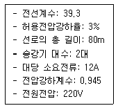
- 5.5
- 8
- 14
- 22
(정답률: 54%)
37. 전압 변동률을 구하는 공식이다. ( )안에 들어가야 할 용어에 해당되는 것은?
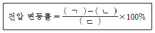
- (ㄱ)무부하 전압, (ㄴ)전부하 전압, (ㄷ)전부하 전압
- (ㄱ)전부하 전압, (ㄴ)전부하 전압, (ㄷ)무부하 전압
- (ㄱ)무부하 전압, (ㄴ)전부하 전압, (ㄷ)무부하 전압
- (ㄱ)전부하 전압, (ㄴ)무부하 전압, (ㄷ)무부하 전압
(정답률: 40%)
38. 스프링완충기를 사용할 수 있는 속도범위는 일반적으로 몇 m/min 이하인가?
- 60
- 90
- 1⑤
- 120
(정답률: 72%)
39. 유압승강기에서 바닥 맞춤 보정장치는 몇 mm 이내에서 작동하여야 하는가?
- 50
- 60
- 75
- 80
(정답률: 60%)
40. 권상기에 적용되는 주로프(Main Rope)가 ø16일 때 권상기 도르레의 직경으로 사용하여도 되는 것은?
- ø400
- ø480
- ø520
- ø760
(정답률: 69%)
3과목: 일반기계공학
41. 축간거리가 600mm 이고, 회전수가 N1=200, N2=100 인 외접 원통 마찰차의 지름 D1 , D2 는 각각 몇 mm 인가?
- D1 = 400 mm , D2 = 600 mm
- D1 = 400 mm , D2= 800 mm
- D1 = 600 mm , D2 = 600 mm
- D1 = 800 mm , D2 = 400 mm
(정답률: 52%)
42. 다음 중 절삭 작업시 일감 표면이 거칠어지는 요인으로 틀린 것은?
- 기계의 강성 및 정밀도
- 절삭제
- 기계의 진동
- 커터날의 균일
(정답률: 47%)
43. 두개의 금속편 끝을 각각 용융점 근처까지 가열하여 양끝을 접촉시켜 압력을 가하여 접합시키는 작업은?
- 단조
- 압접
- 압출
- 압연
(정답률: 81%)
44. 유니버셜 이음(Universal joint) 설명으로 올바른 것은?
- 2축이 평행하고 있을 때에 사용하는 클러치이다.
- 2축이 직교할 때에 사용되고 운전중 단속할 수 있다.
- 2축이 교차하고 있을 때에 사용하는 크랭크 축이다.
- 2축이 교차하는 경우에 사용되는 커플링의 일종이다.
(정답률: 70%)
45. 부식방지를 위해 차체에 주로 사용되는 강판은?
- 냉간압연강판
- 열간압연강판
- 표면처리강판
- 스테인레스강판
(정답률: 65%)
46. 티타늄 합금에 관한 성질 설명으로 틀린 것은?
- 경량(비중 4.5)으로 스테인레스강보다 내식성이 우수하다.
- 크리프강도와 피로강도가 높고 장시간 가열에 대한 열 안정성이 좋다.
- 고강도인 반면 가공과 용접이 곤란하여 알루미늄합금에 비교하여 소재의 가공이 어렵다.
- 산화성 환경에서 염화물이 있으면 스테인레스강보다 내식성이 낮다.
(정답률: 83%)
47. 모듈이 6, 잇수가 50인 표준 스퍼기어의 바깥지름[mm]은?
- 300
- 312
- 316
- 322
(정답률: 61%)
48. 단순보의 전 길이에 걸쳐 균일분포하중이 작용할 때 최대 굽힘 모멘트는 보의 어느 지점에서 일어나는가?
- 중앙
- 양끝에서 1/3 되는 단면
- 양끝 단면
- 양끝에서 1/4 되는 지점
(정답률: 69%)
49. 지름 75mm의 커터가 매분 60회전하며 절삭할 때 절삭 속도는?
- 14 m/분
- 20 m/분
- 26 m/분
- 32 m/분
(정답률: 68%)
50. 회전수 2000rpm에서 최대 토크가 35 ㎏f-m로 계측된 축의 축마력은 약 몇 PS 인가?
- 97.76
- 71.87
- 116.0
- 118.0
(정답률: 35%)
51. 다음 중 압력제어 밸브의 종류가 아닌 것은?
- 교축 밸브
- 언로딩밸브
- 릴리프 밸브
- 카운터 밸런스 밸브
(정답률: 56%)
52. 강의 성질에 영향을 주는 원소들에 대한 설명이 잘못된 것은?
- 규소(Si) : 용융금속의 유동성을 좋게하여 강도, 경도 및 탄성한도를 증가시킴
- 황(S) : 적열취성을 일으키며 연성을 감소시킴
- 망간(Mn) : 적열취성을 방지하고 인성증가 및 담금질성을 좋게함
- 인(P) : 상온취성을 방지하여 인장강도 및 연신율을 증가시킴
(정답률: 60%)
53. 다음 중 다이얼 게이지로 측정할 수 있는 것은?
- 캠축의 휨
- 피스톤의 외경
- 피스톤과 실린더 간극
- 나사의 피치
(정답률: 75%)
54. 다음 중 상온(냉간)가공에 비교되는 고온(열간)가공에 관련된 설명으로 올바른 것은?
- 미세결정의 형성이 끝나는 재결정 온도보다 다소 높은 온도에서 작업한다.
- 강에서는 임계 범위보다 높은 온도에서 작업한다.
- 재료의 취성구역에서 작업할 때 영향을 받으나 그렇지 않을 때도 있다.
- 강의 경우 보통 1040℃이며 최저 재결정온도보다 낮아야 한다.
(정답률: 55%)
55. 강 제조 중에 들어가는 불순물 중에서 충격에 대한 상온 취성의 원인이 되는 원소는?
- 망간(Mn)
- 규소(Si)
- 인(P)
- 구리(Cu)
(정답률: 73%)
56. 물체에 작용하는 힘이 4배로 커지면 가속도는 몇 배로 되는가?
- 1/2
- 2
- 4
- 8
(정답률: 67%)
57. 소요전력이 40kW, 펌프효율은 80% 이고, 전양정이 30m 이면 양수량은 몇 m3/s가 되는가?
- 0.1088
- 0.2548
- 0.3724
- 0.6524
(정답률: 36%)
58. 125kgf-m의 비틀림 모멘트 만 받는 실체 원축(實體圓軸)의 지름은 몇 mm 정도인가? (단, 허용 비틀림 응력은 5 kgf/mm2 이다.)
- 50 .31
- 80.01
- 100.82
- 356.82
(정답률: 40%)
59. 수관내를 흐르는 수주를 급격히 정지시킴으로서 발생하는 상승수압을 이용하여 높은 곳에 양수하는 펌프의 명칭은?
- 제트 펌프
- 재생 펌프
- 수격 펌프
- 점성 펌프
(정답률: 70%)
60. 길이 1000 cm, 지름 6 cm 인 둥근축에 2000 kgf-cm의 비틀림 모멘트가 작용하는 축에 생기는 최대 전단응력은 몇 kgf/cm2 인가?
- 27.2
- 3.7
- 47.3
- 5.7
(정답률: 37%)
4과목: 전기제어공학
61. 일정 전압의 직류전원에 저항을 접속하고 전류를 흘릴 때, 이 전류값을 50% 증가시키기 위하여는 저항값을 몇 배로 하면 되는가?
- 0.60
- 0.67
- 0.80
- 1.20
(정답률: 50%)
62. R-L-C 직렬회로의 합성 임피던스를 구하는 관계식은?
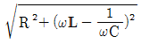
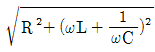
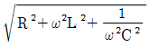
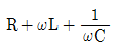
(정답률: 68%)
63. 그림과 같이 접지저항을 측정하였을 때 R1의 접지저항을 계산하는 식은? (단, R12=R1+R2, R23=R2+R3, R31=R3+R1 이다.)
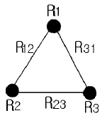
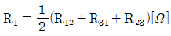
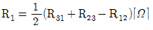
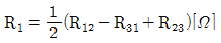
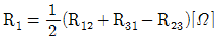
(정답률: 70%)
64. 온도 보상용으로 사용할 수 있는 것은?
- 다이오드
- 다이액
- 더미스터
- SCR
(정답률: 75%)
65. 유도전동기에서 동기속도는 3600rpm이고, 회전수는 3420rpm이다. 이 때의 슬립은 몇 % 인가?
- 2
- 3
- 4
- 5
(정답률: 69%)
66. 직류 타여자전동기의 계자전류를 1/n로 하고 전기자회로의 전압을 n 배로 하면 속도는 어떻게 되는가?
- 1/n2
- 1/n
- 2n
- n2
(정답률: 63%)
67. 그림은 전동기 속도제어의 한 방법이다. 전동기가 최대 력을 낼 때, 다이리스터의 점호각은 몇 rad 이 되는가?
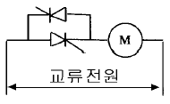
- 0
- π/6
- π/2
- π
(정답률: 66%)
68. 다음 논리식 중 맞는 것은?
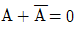
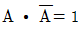
- A+1=A
- A·B+A=A
(정답률: 62%)
69. 프로세스제어에 있어서 최적제어의 일반적인 의미가 아닌 것은?
- 최대효율 유지
- 최대수량 생산
- 최저 단가 제품생산
- 최저 속응성 유지
(정답률: 62%)
70. 서보기구는 물체의 위치, 방향, 자세 등을 제어량으로 하는 분야에 널리 사용되며, 목표치의 임의 변화에 추종 하도록 구성되어 있다. 이 제어시스템의 특징을 잘 설명하고 있는 것은?
- 제어량이 전기적 변위이다.
- 목표치가 광범위하게 변화할 수 있다.
- 개루프 제어이다.
- 현장에서 제어되는 일이 많다.
(정답률: 56%)
71. 제어계의 기본 구성요소가 아닌 것은?
- 제어목적
- 제어대상
- 제어요소
- 결과
(정답률: 35%)
72. 제어요소의 동작 중 연속동작이 아닌 것은?
- 비례제어
- 비례적분제어
- 비례적분미분제어
- 온.오프(ON.OFF)제어
(정답률: 73%)
73. 그림과 같은 블록선도와 등가인 것은?
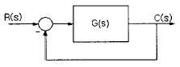
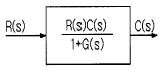
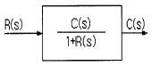
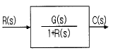
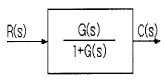
(정답률: 50%)
74. 전기회로에서 부하에 흐르는 전류는 전압에 비례한다는 옴의 법칙에서 전기저항의 단위는?
- A
- V
- R
- Ω
(정답률: 76%)
75. 그림과 같은 회로에서 합성 정전용량을 구한 것은?
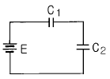
- C0=C1+C2
- C0=C1-C2
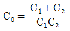
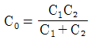
(정답률: 57%)
76. 3상 유도전동기의 출력이 5마력, 전압 220V, 효율 80%, 역률 90%일 때 전동기에 유입되는 선전류는 몇 A 인가?
- 11.6
- 13.6
- 15.6
- 17.6
(정답률: 49%)
77. 직류전동기에서 전기자 전도체수 Z, 극수 P, 전기자 병렬 회로수 a, 1극당의 자속 ø[Wb], 전기자 전류 Ｉ[A]일 때 토크는 몇 N.m 인가?
- aZøI/2πP
- PZøI/2πa
- aPZI/2πø
- aPZø/2πI
(정답률: 67%)
78. 오프 셋(OFF-SET)이 없게 할 수 있는 동작은?
- 2위치동작
- P동작
- PＩ동작
- PD동작
(정답률: 56%)
79. 그림과 같은 논리식 및 논리회로를 바르게 나타낸 것은?
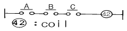
 , NOT회로
, NOT회로 , NOR회로
, NOR회로- F=A+B+C, OR회로
- F=ABC, AND회로
(정답률: 76%)
80. 어떤 제어계통을 부궤환 제어계통으로 만들면 오픈 루프(open loop) 시스템 때보다 루프 이득은?
- 불변이다.
- 증가한다.
- 증가하다가 감소한다.
- 감소한다.
(정답률: 67%)